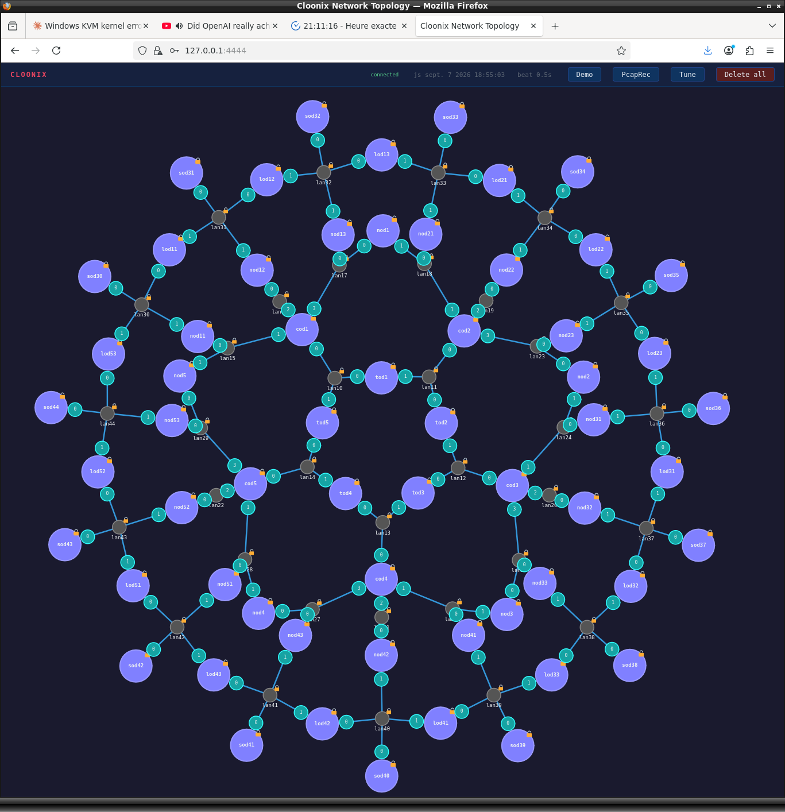
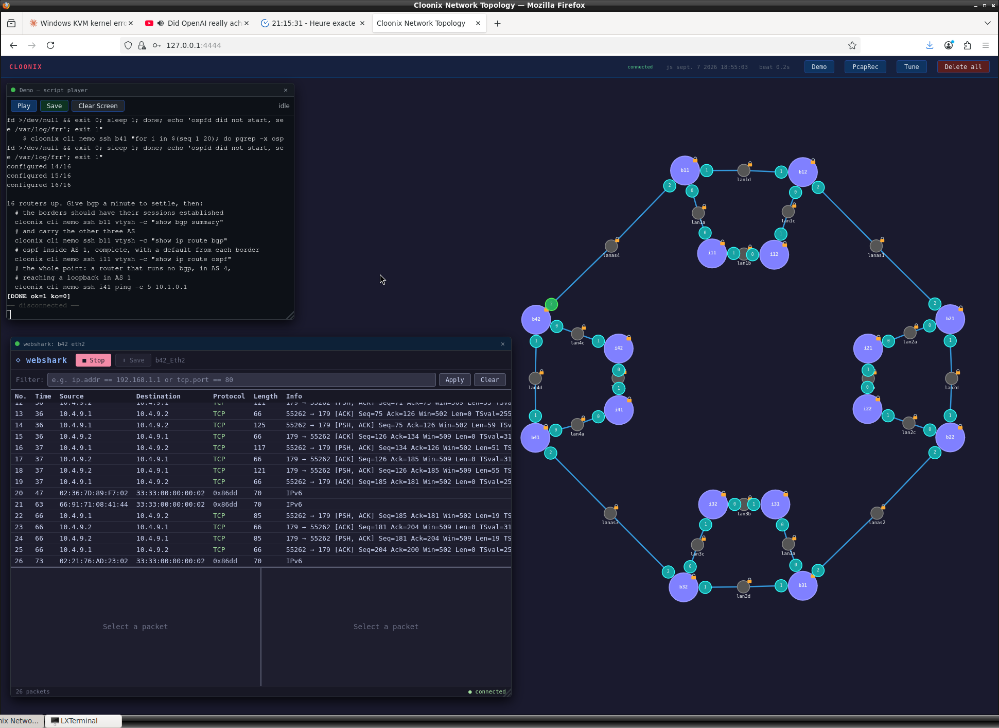
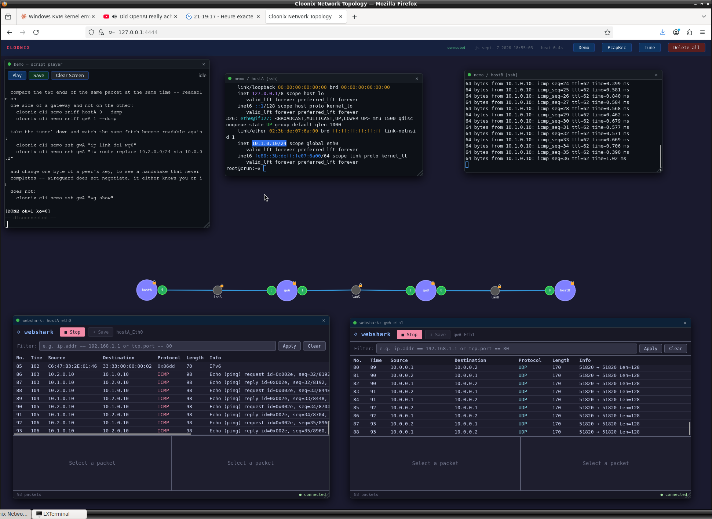
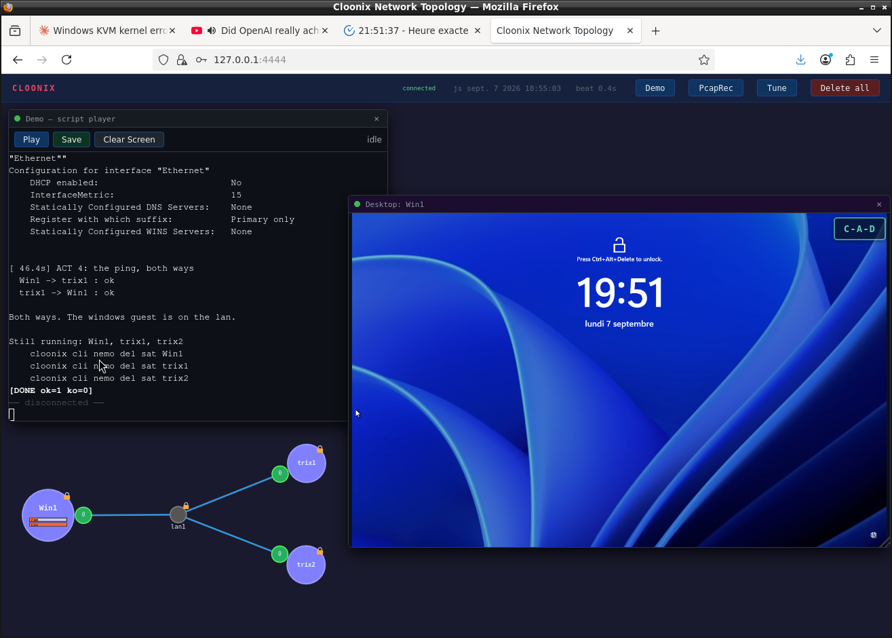
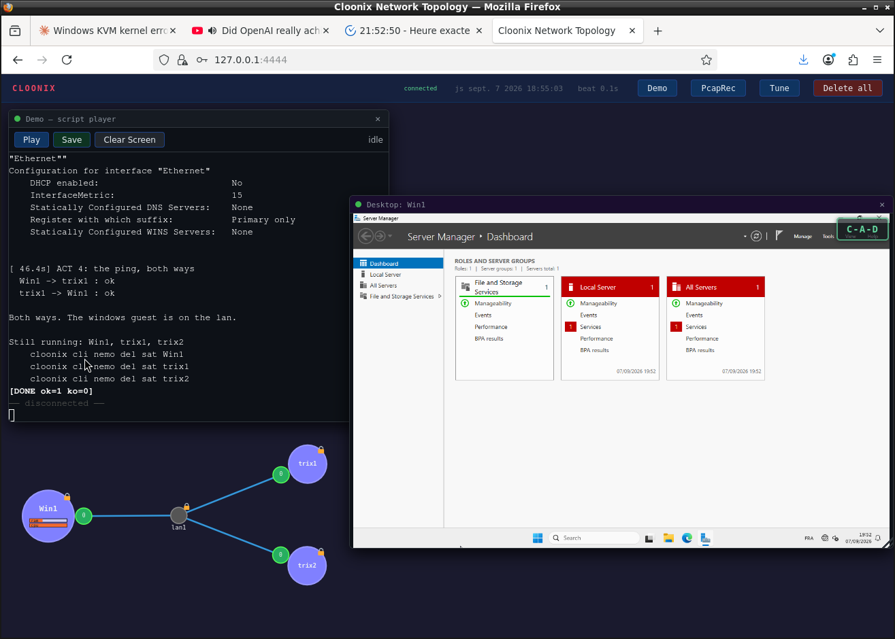
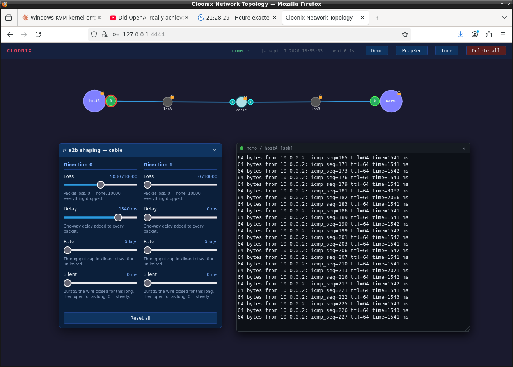

Each picture is the web canvas after the demo script ended. The
script is one python file in demos/, run with one command; the
network it built stays up, and every window on the canvas is one click on an
item.

Sixty frr_trixie containers and forty-five lans, in rings: a
core of five, a ring of cod and nod routers, an outer ring of lod and sod
leaves. The shape is two tables in the script and the rest is loops; the
routers are configured in parallel, and the whole web is up in about a
minute. Every one of them runs ospfd, and the routes in any of them come from
the fifty-nine others.
cloonix cli nemo demo routing/frrspider.py cloonix cli nemo cnf cod1 eth0 sniff=on cloonix cli nemo sniff cod1 eth0 --dump not tcp and not udp and not icmp
OSPF is IP protocol 89, so the filter reaches it by exclusion. Cut a lan
with unplug and the capture shows the reconvergence.

Sixteen routers in four autonomous systems: OSPF inside each, BGP between
the borders, each border joined by a lan to a border of the next AS. The sniffer
window is on b42 eth2, a border-to-border wire, and lists the
tcp 179 session between two neighbours. The last line of the script pings a
loopback of AS 1 from a router of AS 4 that runs no BGP at all: the default
it learned from its border by OSPF is what carries it.
cloonix cli nemo demo routing/frrmix.py cloonix cli nemo ssh b11 vtysh -c "show bgp summary" cloonix cli nemo ssh i41 ping -c 5 10.1.0.1
Remove the discard route from one border and every session still reports itself established while the prefix it covered is no longer announced.

Two sites and a middle lan that plays the internet. The two gateways
build a wireguard tunnel across it and route each site through the other.
The two capture windows are the demonstration: on hostA eth0
the ping to 10.2.0.10 is icmp, request and reply; on gwA eth1,
the wire an eavesdropper would have, the same traffic is udp port 51820,
128 bytes of payload each, and nothing else.
cloonix cli nemo demo security/wg.py cloonix cli nemo sniff hostA eth0 --dump cloonix cli nemo sniff gwA eth1 --dump
The script ends with what to try: take the tunnel down and watch the
same fetch become readable on the middle lan, or change one byte of a peer
key and watch wg show never complete a handshake.

A windows kvm and two trixie containers on one lan. The demo player on
the left is the end of the script: the interface of Win1 configured over
cloonix cli ssh through the cloonix agent the insider disc
carries, then the ping ok both ways. The panel on the right is the desktop
of the guest in the browser. What windows needs before it answers a ping
— an adapter that may be disabled, an address, a firewall rule for
echo request — is the content of the demo.

Before the login the panel shows the lock screen; the C-A-D
button in its corner sends the Ctrl+Alt+Delete the browser would keep for
itself.
cloonix cli nemo demo windows.py cloonix cli nemo ssh Win1 "ipconfig" cloonix cli nemo ssh trix1 "ping -c 5 10.0.0.1"

Two machines and one a2b between them: a piece of wire with
loss, delay, rate and silence settable in each direction apart. The panel on
the left is direction A2B with 1540 ms of delay and half the packets dropped;
the console on the right is the ping from hostA at that moment, 1541 ms a
reply and sequence numbers missing where the loss took them. The same
settings are one line from the command line.
cloonix cli nemo demo cloonix/a2b.py cloonix cli nemo cnf cable A2B delay=100 cloonix cli nemo cnf cable A2B loss=100
The script measures a tcp transfer at each setting, so what tcp does about a delayed, lossy or capped line is read off the numbers.